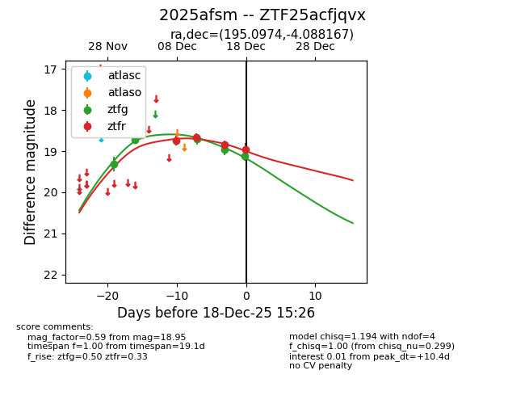
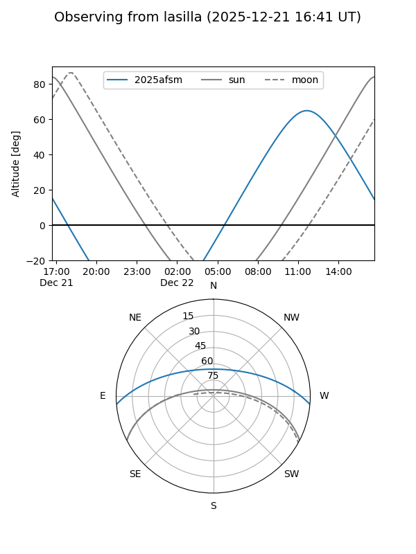
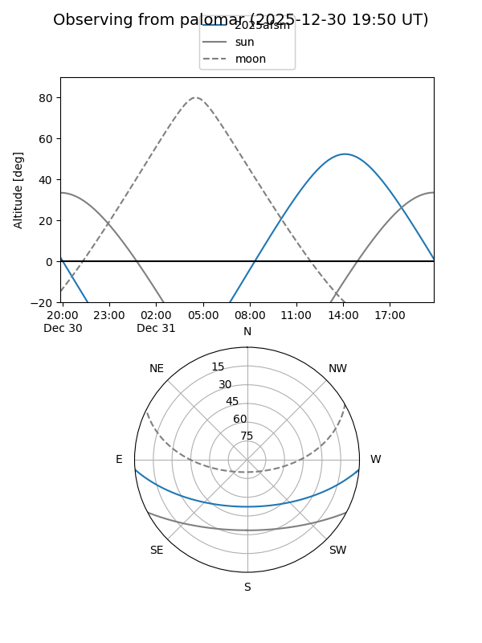
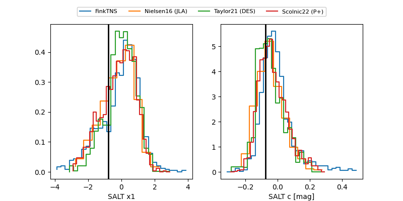

2025afsm
Target 2025afsm at 2025-12-31 18:00
Aliases and brokers:
FINK: link
Lasair: link
ALeRCE: link
TNS: link
YSE: link
alt names
ZTF25acfjqvx (ztf,fink_ztf)
2025afsm (tns,yse)
Coordinates:
equatorial (ra, dec) = 195.0974,-4.08817
equatorial (HMS+DMS) = 13:00:23.37,-04:05:17.40
galactic (l, b) = (307.2326,+58.70881)
Flags:
Photometry:
last ztfg=19.44, ztfr=18.95
6 ztfg, 4 ztfr detections
Lightcurve

Visibility


Additional plots
